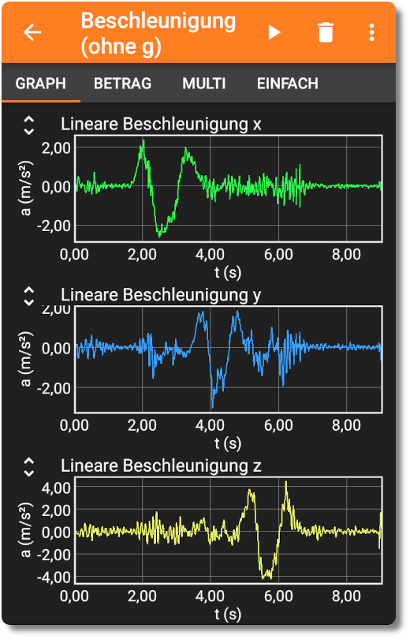
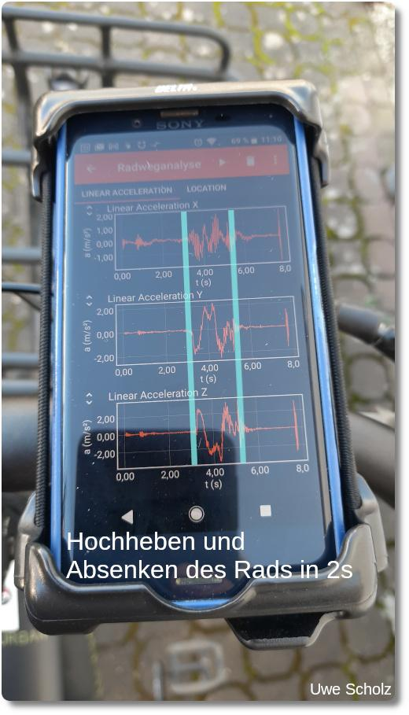
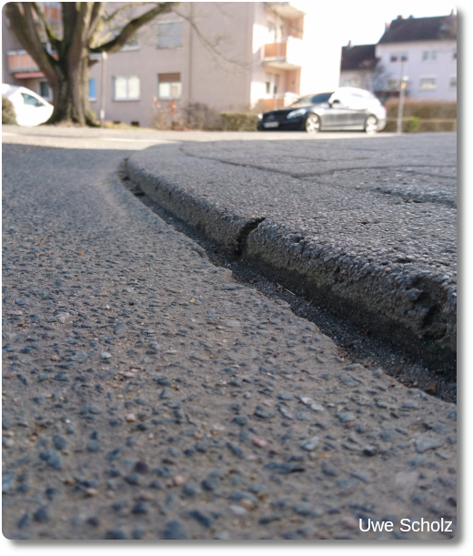
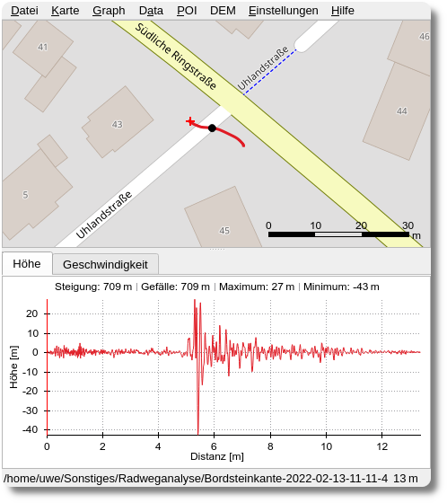

Radweganalyse mit dem Handy
Jeder Fahrradfahrer möchte auf guten Radwegen fahren. Aber was sind eigentlich gute Radwege? Die Antwort dazu findet man in Ausgabe 18 der Online-Zeitschrift Fahrrad Zukunft. Der verlinkte Artikel bekommt von mir eine absolute Leseempfehlung und sei jedem Fahrradfahrer wärmstens empfohlen. Dort wird unter anderem auch davon berichtet, wie in den Niederlanden spezielle Fahrräder verwendet werden, um die Qualität von Radwegen mit (recht teuren) Sensoren zu messen. Ähnliche Sensoren, so dachte ich mir, sind heute auch in handelsüblichen Smartphones vorhanden. Auch wenn diese Sensoren eine geringere Genauigkeit aufweisen, so hatte ich die Idee, aus meinem Smartphone einen Radweg-Analysator zu machen. Mit dem Handy gesammelte Daten sollten also vielleicht einen objektiven Hinweis geben können, an welchen Stellen die Qualität der von mir befahrenen Radwege relativ gut oder schlecht ist.
Das Setup - Wie komme ich an die Daten?
Die erste Frage, die zu klären war: Kann man mit dem Smartphone den Beschleunigungssensor und die GPS-Daten parallel auslesen?
Kurze Antwort: Ja, das geht mit der genialen App phyphox, erhältlich für Android und iOS, entwickelt von Mitarbeitern der RWTH Aachen. Mit Hilfe dieser App kann man auf die meisten Sensoren des Smartphones zugreifen und diese auslesen. Dabei werden die Daten sofort grafisch auf dem Display des Handys dargestellt. Unten sieht man das Ergebnis einer etwa acht-sekündigen Messung, bei der ich mein Smartphone nacheinander jeweils in x-, y- und in z-Richtung mit der Hand hin und her bewegt habe:
Die Bewegung in z-Richtung stellt dabei die Bewegung senkrecht zum Bildschirm dar, so, als ob das Smartphone vom Tisch liegend hochgehoben und wieder nach unten gesenkt wird. Man kann die einzelnen Bewegungsvorgänge gut auseinanderhalten, was eine gute Voraussetzung für die spätere Messung auf der Straße ist. Denn eine schlechte Wegqualität sollte sich vor allem in einer starken Beschleunigung in z-Richtung bemerkbar machen.
Als nächstes war die Frage, ob man die Daten des Beschleunigungssensors mit der Messung der GPS-Koordinaten kombinieren kann. Tatsächlich ist das ganz einfach möglich. Man muss sich nur ein eigenes Experiment in phyphox anlegen, welches aus der Kombination beider Messungen (Beschleunigung und GPS) besteht. Wer das nicht selber einrichten möchte, kann hier die phyphox-Datei für dieses Experiment herunterladen und bei sich selbst in phyphox importieren. Sollte es dabei Probleme geben so stehen auf der phyphox-Homepage mögliche Lösungsvorschläge.
Der Datenexport funktioniert in phyphox auch sehr einfach: Pausiert man eine Messung durch Klick auf das Pause-Symbol, so kann man durch einen weiteren Klick ins Menü die gesammelten Daten in einer csv-Datei exportieren. Das Vorgehen ist simpel und bedarf nur wenig Übung. Die Daten beider Sensoren liegen nach dem Export in einer zip-Datei im Speicher des Handys vor. Sie lasen sich nun mit einem beliebigen Programm auswerten. Mein Dank geht hier an die Entwickler von phyphox für diese genial einfache und übersichtliche App!
Und damit hat man auch schon das Ausgangsmaterial für eine Datenanalyse - die Daten des Beschleunigungssensors und die des GPS-Sensors. Weitere technische Details beschreibe ich am Ende des Artikels, da es einen kleinen Kniff gibt, den man bei einer Messung auf dem Radweg beachten muss. Weiter geht es jetzt mit der Hardware. Wer aber zuerst noch wissen möchte, welche Möglichkeiten das eigene Smartphone bietet, den sei die Sensor-Datenbank von phyphox empfohlen.
Das Setup - Die Hardware
Um einen Radweg zu vermessen, braucht man vielleicht nicht zwingend ein Fahrrad, aber da ich eins besitze, musste es natürlich für diesen Zweck herhalten. Mein Rad hat eine starre Vordergabel, also keine Federgabel, sodass Unebenheiten des Radwegs sehr direkt vom Fahrer und vom Smartphone registriert werden können. Mein Smartphone habe ich, wie man im unteren Foto sieht, durch einen handelsüblichen Halter am Fahrradlenker befestigt. Dabei habe ich den Halter so positioniert, dass das Display meines Smartphones so gut wie möglich parallel zur Erdoberfläche ausgerichtet ist.
Auf dem Display des Handys kann man eine erfolgte Beschleunigungsmessung vom Hochheben und wieder Absenken des Rades erkennen. Im Bild habe ich den Start und das Ende des Hebevorgangs mit zwei blauen Linien markiert. Soweit so gut.
Ergebnisse
Die Ergebnisse einer kurzen Fahrt mit dem Rad über eine abgesenkten Bordsteinkante von etwa 2cm Höhe soll als erstes dargestellt werden.
Nach der Datenauswertung kann man mit dem mit dem Programm GpxSee am PC folgendes sehen:
Technische Feinheiten - Synchrone GPS- und Beschleunigsmessung mit dem Smartphone
Die exportierten Daten des Beschleunigungssensors und des GPS-Sensors haben unterschiedliche Frequenzen. (~200Hz Beschleunigung, 1Hz GPS). Mit Hilfe einiger Werkzeuge gelang es mir, die GPS-Daten (z.B. durch lineare Interpolation) zu resamplen, um die interpolierten Koordinaten jedes einzelnen Beschleunigungsmessdatensatzes zu finden. Auf diese Weise konnte ich eine resamplete Location.csv-Datei erstellen, die ebenfalls 200 Datenpunkte pro Sekunde enthält. Damit war es schließlich möglich, eine gpx-Datei (mit einem anderen Werkzeug) zu erstellen, in der ich die z-Beschleunigung in Abhängigkeit von den GPS-Koordinaten aufzeichnen konnte. Siehe das folgende Bild als Beispielergebnis:
Das war wirklich vielversprechend!!! (Die Daten des Höhendiagramms sind eigentlich die z-Beschleunigung in m/s².) Zusammen mit einem Freund habe ich ein Skript erstellt, mit dem ich in den Messdaten sogar die Positionen mit den höchsten z-Beschleunigungswerten finden konnte, d.h. Positionen der Radstrecke, wo die Oberflächenqualität am schlechtesten ist. Als ich zum Beispiel über einen Kanaldeckel ("Gullydeckel") gefahren bin, habe ich recht hohe z-Beschleunigungswerte gemessen.
Okay, und jetzt komme ich zum eigentlichen Thema: Beim erneuten Besuch der gefundenen Positionen mit hohen z-Werten im wirklichen Leben stellte sich heraus, dass die Position auf der Karte oft nicht die wirkliche Position ist und dass alle Positionen systematisch verschoben sind! Zum Beispiel war die reale Position des Kanaldeckels ~10 Meter von der Position in der gpx-Karte entfernt. (Siehe die schwarzen Punkte im Bild oben, dies sind die gemessenen Koordinaten mit hohen z-Beschleunigungswerten, aber beim Besuch der meisten davon war die tatsächliche Straßen-"Bodenwelle" immer einige Meter von dieser Position entfernt). Obwohl die Daten des GPS und des Beschleunigungsmessers zur gleichen Zeit gemessen wurden!